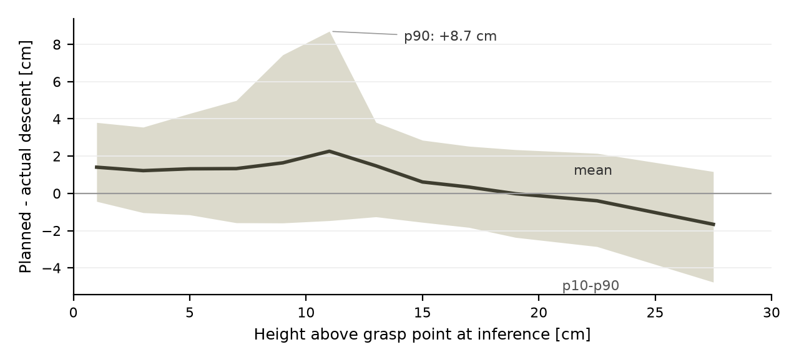
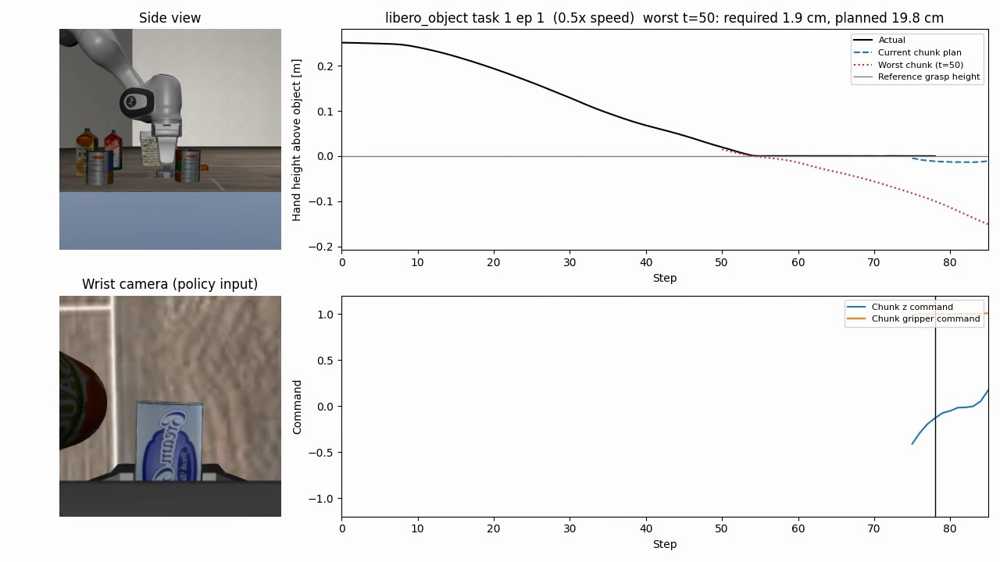
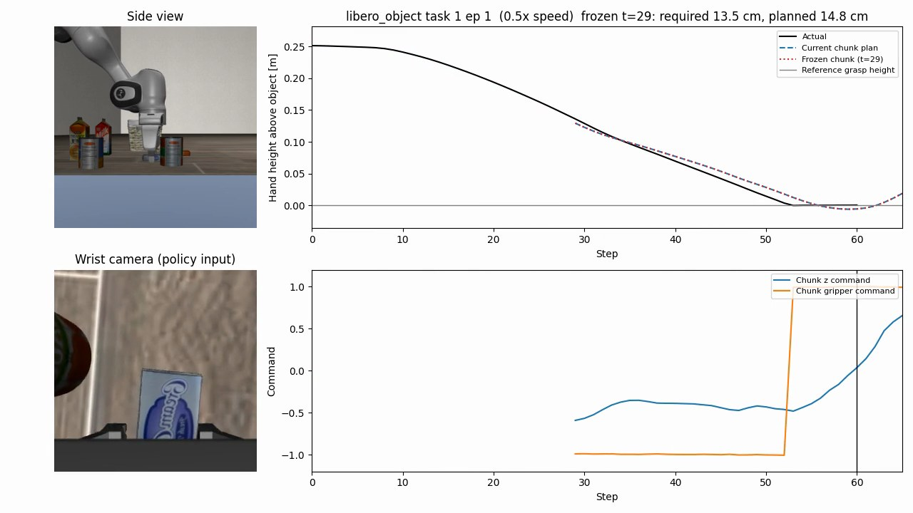

深度画像を持たない VLA モデル pi0.5 の Libero チューニング済みモデル（lerobot/pi05_libero_finetuned_v044）を対象に、対象物へのアプローチ中の推論が距離をどれだけ正しく捉えているかを 1000 ロールアウトで測定した。測定から、計画の信頼できる距離帯があることと、手先が止まった後も下降指令が続く「過剰下降」を確認した。対策として、方策自身の計画から推論を固定する機能を実装した。机上の物体タスクでは過剰下降が減り、棚のタスクでは悪化した。
pi0.5 は、対象物との距離を主にリストカメラ画像の物体スケールから推定していると推測した。その場合、推定の信頼できる距離には偏りがあるはずだが、どの距離で推論が入るかは推論間隔の都合で決まり、選べない。そこで次の仮説を立てた。
当初は「近いほど壊れる」と考えていたが、測定で単調な悪化が見られなかったため、上記の形に弱めた。物体スケールへの依存そのものは今回は検証していない。
データ収集: Libero の pick&place 系 2 スイート（libero_spatial、libero_object）20 タスクを各 50 エピソード、推論間隔 5 ステップで実行した。推論のたびにシミュレータ状態とチャンク全量（50 ステップ）を記録した。実行は Google Colab の G4 ランタイムで 8 並列とし、データは rclone で Google Drive に保存した。
誤差の定義: 閉指令の開始後に z 指令が下降でなくなる点をアプローチ完了とし、チャンクの先頭からアプローチ完了までの累積下降量を「計画下降量」とした。アクションからメートルへの換算係数は、実際の移動量から実測した（0.0119 m/アクション、R2=0.97）。推論間隔に依存しないよう、計画下降量はチャンク全量を基準に計算している。
対象の絞り込み: タスクの成否は問わず、アプローチ完了時に手先が対象物の近くにいないロールアウトだけ除いた。1000 本中 43 本が該当し、957 本、9,321 推論を分析した。全体の成功率は 98.0% である。

| 推論時の高さ | 推論数 | 平均 | p10 | p90 | 評価 |
|---|---|---|---|---|---|
| 0〜8cm | 2,385 | +1.2〜+1.4cm | -0.4〜-1.6cm | +3.6〜+5.0cm | 残り距離に対して誤差が大きい |
| 8〜12cm | 1,096 | +1.6〜+2.3cm | -1.6〜-1.5cm | +7.4〜+8.7cm | 最も悪い。突っ込み側の裾が大きい |
| 14〜20cm | 1,979 | 0.0〜+0.6cm | -2.4〜-1.6cm | +2.3〜+2.9cm | 最も安定。偏りが小さい |
| 25〜30cm | 659 | -1.7cm | -4.8cm | +1.2cm | 届かない側に寄る |
計画の精度は距離に対して単調ではなく、14〜20cm が最も安定し、8〜12cm で急に悪化した。仮説の「適切な距離の範囲がある」と整合する結果である。
誤差の大きいロールアウトを動画で確認すると、手先が止まった後も方策が下降指令を出し続け、チャンクは対象物より 15cm 以上下を計画していた。誤差の大きいチャンクは再推論で実行前に置き換わることが多く、タスク自体は成功していた。手先が止まる原因は接触と見ているが、接触力は測っていない。上位 5 件を同じ状態から 16 回推論し直しても誤差は再現し（平均 +13.5〜+19.3cm）、サンプリングのばらつきではなかった。
距離が適切なうちにチャンクを確定し、把持まで再推論を止める機能を scripts/rollout.py に実装した。
発動距離 16 / 12 / 8cm を、誤差上位 100 本とランダム 100 本の計 200 本で、同じタスク、エピソード、シードのまま比較した。動画と以下の結果は 16cm 条件である。
指標は過剰下降ステップ数（下降指令中に高さが動かなかったステップ数の平均）である。対策なしの 1000 本で、このステップ数が 5 以上のロールアウトが 30% 以上あるタスクを過剰下降タスクとした。効果の方向が逆の層を混ぜた平均には意味がないため、層別に評価した。p 値は対応のある符号検定による。
| 層 | 本数 | 過剰下降ステップ数 | p 値 | 成功率 |
|---|---|---|---|---|
| 机上の物体タスク（object 1, 4, 5, 6, 8） | 46 | 9.17 → 6.07 | 0.07 | 100% → 100% |
| 棚のタスク（spatial 4） | 33 | 5.55 → 7.15（悪化） | 0.05 | 100% → 97.0% |
| 過剰下降の少ないタスク | 121 | 1.29 → 1.41 | 0.36 | 96.7% → 96.7% |


棚のタスクで効果が出なかった原因として、次の 3 つを考えている。いずれも切り分けには追加の検証が必要である。
棚のタスクのずれが安定していることは、方策が棚より低い面を目標にしている可能性を示す。ただし、これは相関であり、因果は未検証である。